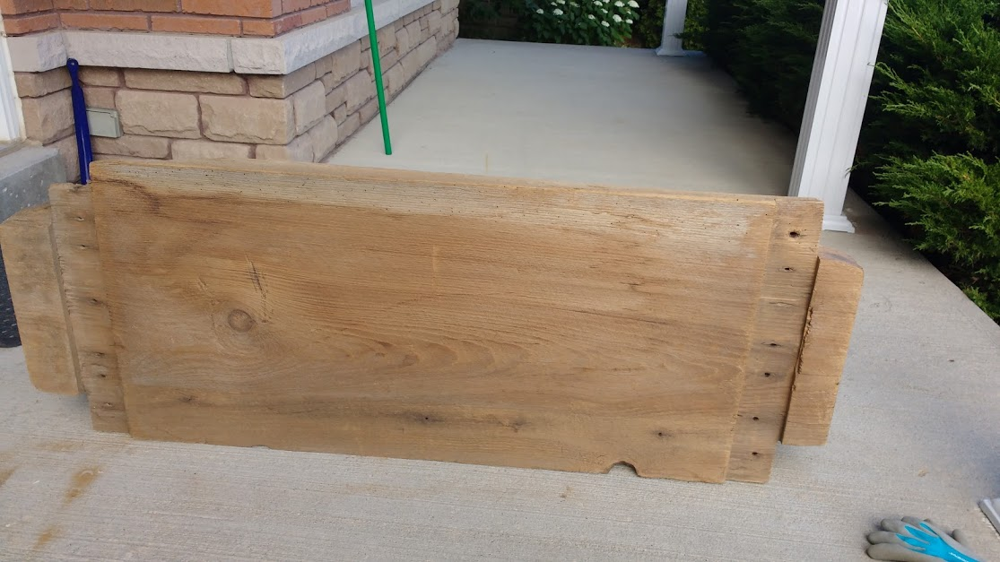
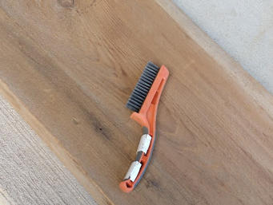
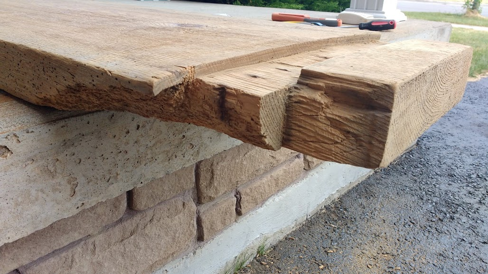
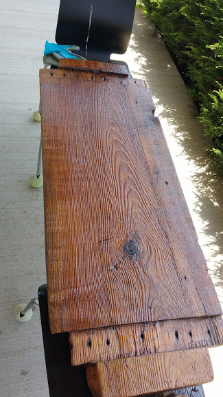
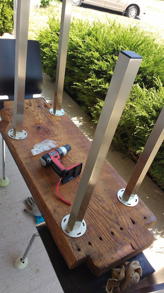
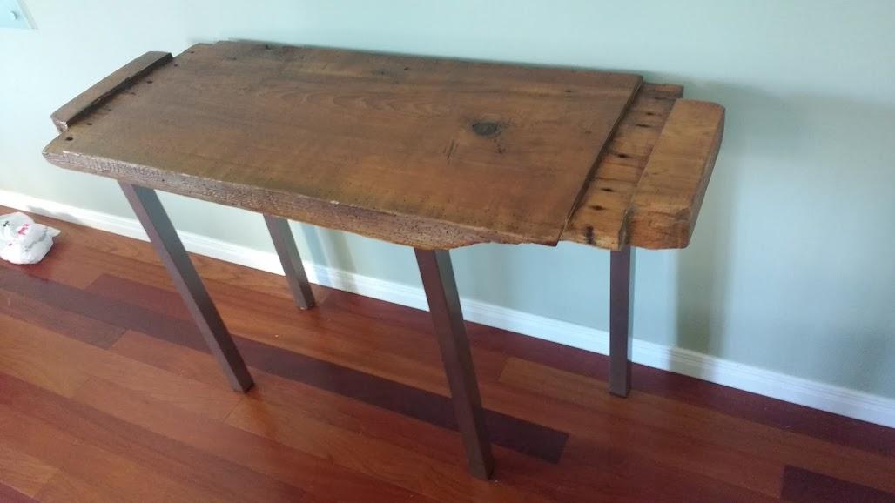

Building a desk
 Someone gave me a really gorgeous piece of wood.
It’s exactly what I was hoping to get my hands on. Given that I have absolutely minimal experience working with woods.
I got a steel brush for a few bucks. The wood is completely dry, and it was surprisingly easy to remove the dusty layer off the surface with some hard brushing.


The block of wood is full of unique characteristics. After all, it’s these things that make it so much fun. This particular piece has a rough corner. I didn’t want to do much about it except sawing it lightly, and sanding down possible splitters.
I got some wood oil and stains from Canadian Tires.

 After a few coats of wood stain and gloss finish, it looks absolutely great.
The legs are from IKEA. Putting the legs are easy enough. The wood is quite soft, and it’s really quite easy to drill the guiding holes for the screws.
The only really hard part is that the wood is not perfectly flat, so I had to put some inserts and adjusted them repeated to make sure that the legs are perfectly leveled.


Finally, it’s all done. Actually, it was so much easier than I thought It would have been. I am so thankful that the wood was already nicely polished to start with.
I am happy to report that this blog is written on the desk.

July 15, Oshawa